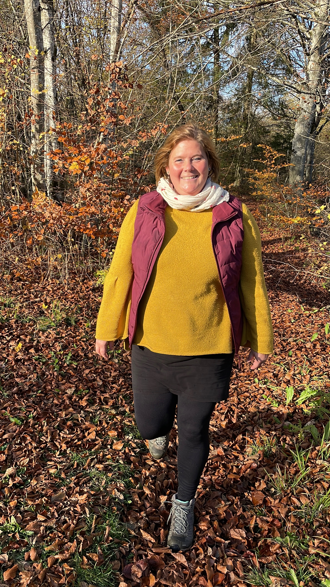
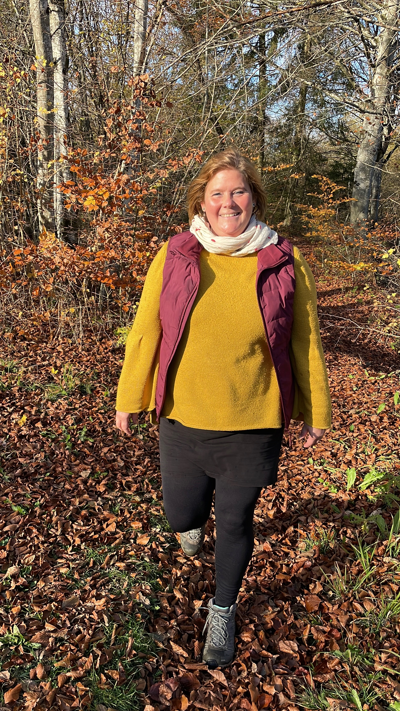

Manchmal öffnen sich Türen schneller, als eine Website fertig werden kann. Diese Seite ist daher eine Übergangslösung – meine ausführliche Homepage entsteht gerade. Hier findest du eine kurze Orientierung zu mir und meiner Arbeit. Spüre, ob sich eine Begleitung für dich stimmig anfühlt.
Der Intuitionsraum ist ein Raum, in dem alles wachsen darf, was schon in dir liegt. Ein Ort, an dem du langsamer werden, spüren und entdecken kannst, wer du wirklich bist.
Meine Begleitung schafft einen Gegenraum – frei von Leistungsdruck, Vergleichen und Erwartungen. Ich begleite dich achtsam, mit Präsenz und Wertschätzung, unterstützt durch kleine Übungen, die deine Selbstwahrnehmung vertiefen.
Über mich
 

Ich bin Louisa, Jahrgang 1986, aufgewachsen in einem Dorf bei Mainz in einem Mehrgenerationenhaushalt, in dem meine (Groß-)Familie einen handwerklichen Betrieb führte. Schon früh habe ich Verantwortung, Zusammenhalt und Bodenständigkeit erfahren – gleichzeitig lernte ich meine Lebensaufgabe kennen: die Balance zwischen Fürsorge für andere und Selbstfürsorge für mich.
Nach dem Abitur absolvierte ich zunächst eine kaufmännische Ausbildung und begann 2009 das Psychologie-Studium in Trier. Seit über einem Jahrzehnt begleite ich hier Menschen psychosozial – mit und ohne Diagnosen – alle mit dem Wunsch, wieder Kontakt zu sich selbst zu finden.
Die Natur ist für mich ein Kraft- und Reflexionsort – am Wasser, auf stillen Waldwegen oder von erhöhten Orten mit Blick in die Ferne finde ich Ruhe, Klarheit und Verbundenheit.
Für mich gehören alle Gefühle zum Menschsein: Freude, Wut, Sehnsucht, Hoffnung oder auch Neid – alles darf da sein. In meiner Begleitung schaffe ich einen Gegenraum zum oft leistungsgeprägten Alltag: achtsam, wertschätzend und präsent. Hier können Menschen ihre Intuition spüren, Selbstfreundschaft entwickeln und ihren eigenen Weg gestalten.
Meine Arbeit im Intuitionsraum basiert auf einer fundierten psychologischen Ausbildung und langjährigen Weiterbildungen in humanistischen Ansätzen. Diese Vielfalt bildet den Hintergrund meiner Haltung – nicht als starres Konzept, sondern als lebendige Grundlage für eine präsente, achtsame Begleitung.
Langjährige Aus- und Weiterbildungen
- 2009-2014: Bachelor of Science in Psychologie, Universität Trier
- 2016-2018: Personzentrierte Körperpsychotherapie, Gesellschaft für Personzentrierte Psychotherapie (GwG)
- 2019-2024: Analytische Gestalttherapie, Bonner Institut für Analytische Gestalttherapie
Seit 2011 besuche ich regelmäßig Kurzfortbildungen, die meine Arbeit vertiefen und erweitern. Sie fließen kreativ und situativ in meine Begleitung ein – immer orientiert am Menschen, der mir gegenübersitzt, nicht an einem festen Methodenkatalog.
Auszug meiner Kurzfortbildungen:
- 2025: Basiskurs 1 & 2 Geistiges & Spirituelles Heilen, Isabell Götz
- 2024: Gestalt und Stille, Bonner Institut für Analytische Gestalttherapie
- 2017: Mit der Natur wachsen – Natur- und Selbsterleben im therapeutischen und beraterischen Kontext – GwG
- 2016: Ressourcenorientierte Personzentrierte Paarberatung – GwG
- 2016: Trauma – Lydia Weyerhäuser
- 2014: Kunsttherapeutische Begleitung
- fortlaufend: zahlreiche systemische Aufstellungen nach verschiedenen Theorien (u.a. dynamische Seelenaufstellung, Dr. Victor Chu, Dr. Franz Ruppert)
Ich nehme weiterhin regelmäßig an kollegialem Austausch und fachlicher Supervision teil, damit meine Fachkompetenz fortführend hinterfragt und fachlich eingenordet wird.
Anmerkung: Ich arbeite nicht als Psychotherapeutin. Meine Weiterbildungen sind bewusst tiefgehend, damit ich aufkommende Themen sensibel erkennen und einordnen kann. Eine therapeutische Bearbeitung in dieser Tiefe gehört nicht zu meinem Angebot. Bei Bedarf verweise ich an qualifizierte Fachpersonen, die auf diesem Gebiet tätig sind.
Themen, die wir gemeinsam erkunden können
In meiner Begleitung kannst du Selbstfreundschaft entwickeln, dich liebevoll und geduldig deinem Erleben zuwenden. Du stärkst deine Intuition und lernst, wieder klar zu spüren, was dich trägt und welche Entscheidungen deinem inneren Weg entsprechen. Gleichzeitig lernst du, deinen eigenen Weg bewusst zu gestalten, kleine Veränderungen wahrzunehmen und Schritt für Schritt Verantwortung für dein Leben zu übernehmen.
1. Innere Führung: Übergänge & Entscheidungen
- Du steckst in einer neuen Lebensphase und schwankst zwischen äußeren Erwartungen, Unsicherheit und deinem eigenen inneren Weg.
- Du stehst vor Entscheidungen, die Mut und Selbstvertrauen erfordern und wünschst dir Unterstützung, um deiner inneren Stimme mehr zu vertrauen.
- Du möchtest Übergänge bewusst gestalten und Abschiede achtsam erleben.
- Du erlebst große Lebensveränderungen – z. B Schwangerschaft, Trennung, Umzug oder andere einschneidende Übergänge und wünschst dir eine präsente Begleitung, die zuhört, Raum hält und dich stärkt, ohne dir Lösungen vorzugeben oder Erwartungen aufzudrängen.
2. Selbstfreundschaft: Selbstwahrnehmung & innere Arbeit
- Du möchtest lernen, freundlicher mit dir selbst umzugehen, Selbstkritik wahrzunehmen und deine Bedürfnisse ernster zu nehmen.
- Du bist neugierig, dich selbst auf neue Weise kennenzulernen – über Gefühle, Körperempfindungen und innere Werte.
- Du wünschst dir Begleitung beim bewussten Spüren deiner Gefühle, um innere Klarheit und Orientierung zu entwickeln.
- Du möchtest lernen, mit Ambivalenz, innerem Druck oder Unsicherheit umzugehen, ohne dich dabei selbst zu verlieren.
- Du wünschst Begleitung, deine Gefühle bewusst wahrzunehmen, Abschied zu nehmen oder auch Übergänge sanft zu gestalten.
3. Träume & innere Botschaften
- Du bist neugierig, spielerisch den Bedeutungsinhalt deiner Träume zu erkunden und daraus Impulse für deinen eigenen Weg zu gewinnen.
- Du möchtest lernen, Träume als Werkzeug für Selbstfreundschaft, Intuition und bewusste Selbstentwicklung zu nutzen – ohne Leistungsdruck, sondern mit Neugier und Offenheit.
4. Gruppenangebote
In unregelmäßigen Zeitfenstern biete ich Gruppenangebote zu den Themen Intuition, Selbstfreundschaft und innere Führung an. Die Termine entstehen achtsam und orientieren sich am jeweiligen Thema und an der Gruppendynamik. Bei Interesse spreche mich gerne darauf an.
Kosten
Kostenloses Kennlerngespräch
Kostenloses Kennenlerngespräch
- 20 Minuten, telefonisch oder persönlich
- Zum gegenseitigen Kennenlernen und um zu schauen, ob meine Begleitung für dich passend ist
Begleitung
- 100 € für 60 Minuten
- jede weiteren 15 Minuten: 25 €, sofern eine Verlängerung abgesprochen und inhaltlich stimmig ist
Ausfallhonorar:
- Termine, die nicht eingehalten werden können, bitte mindestens 24 Stunden vorher absagen.
- Bei späteren Absagen oder Nichterscheinen wird ein Ausfallhonorar von 65% der gebuchten Zeit fällig.
- Dieses Honorar dient dazu, die gemeinsame Zeit, den Raum und die Aufmerksamkeit, die für dich reserviert wurden, zu würdigen.
- So kann ich sicherstellen, dass alle Termine achtsam, präsent und verlässlich stattfinden.
Wichtige Hinweise
Meine Begleitung ersetzt keine ärztliche, psychiatrische oder psychotherapeutische Behandlung.
Meine Begleitung hat einen unterstützenden, stabilisierenden und wohltuenden Charakter. Sie kann neue Perspektiven eröffnen und zur Selbstwahrnehmung beitragen. Eine Abrechnung mit Krankenkassen ist nicht möglich.
Kontakt
Louisa Breyer - Intuitionsraum
Am Fruchtmarkt 2, 54439 Saarburg
E-Mail: hallo@Intuitionsraum.online
Telefon: 06501/9879090
Meine Begleitung findet im Intuitionsraum in der Praxis am Markt von Catharine Buck in Saarburg statt. Bitte erscheine nur zu den vereinbarten festen Terminen, um den Ablauf für dich und andere nicht zu stören.
Zugang & Erreichbarkeit
- Die Praxis befindet sich am Fruchtmarkt 2 in Saarburg, innerhalb der Praxis von Catharine Buck, psychologische Psychotherapeutin.
- Parkplätze sind direkt vor der Tür und auch in der näheren Umgebung verfügbar. Der Bahnhof ist fußläufig 10–15 Minuten entfernt.
- Die Räumlichkeiten sind nicht barrierefrei: Nach dem Fahrstuhl bis zum Intuitionsraum müssen noch 18 Stufen ohne Aufzug überwunden werden.
- Im 2. Stock stehen Bänke als Wartebereich bereit – bitte nicht klingeln, um laufende Termine nicht zu stören.
Umfeld
- Auf der Etage des Wartebereichs, befindet sich eine neurologische/psychiatrische Praxis.
Mein Angebot richtet sich an Menschen aus Saarburg und Umgebung – inklusive Konz, Zerf, Nittel, Trassem, Serrig, Trier, Mettlach, Losheim am See sowie der Grenzregion Luxemburg mit Grevenmacher, Wasserbillig, Mertert.
Der Intuitionsraum befindet sich noch im Aufbau. Erste Termine können bereits ab Februar 2026 stattfinden.